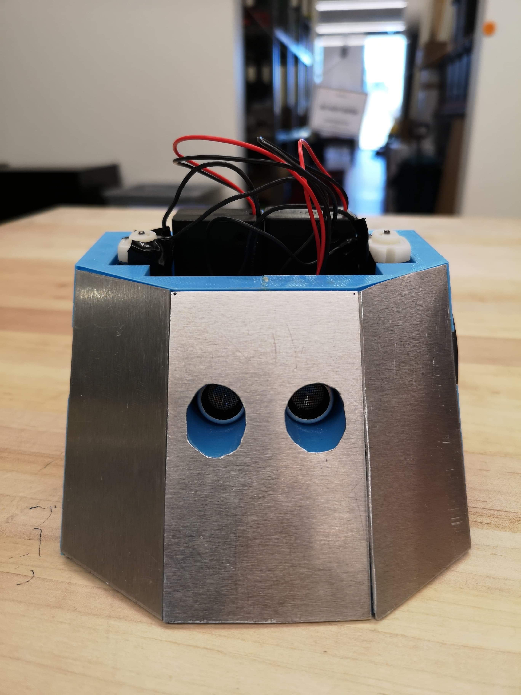

The only thing better than trying something you have never done before is being able to learn from the experience and better yourself.
Timeline
ICS3U - Introduction to Computer ScienceFall 2016
ICS3U - Introduction to Computer Science Final Grade: 96%
Junior year High School course that covers the basics of programming with python. Taught by Patrick Coxall at St. Mother Teresa High School, Nepean, Ontario. This was my first exposure to text-based programming.
Notable experience:
>_ object oriented programming
>_ app development for the Apple App Store
You.i TV - CO-OP PlacementWinter 2017 - Summer 2017
You.i TV - CO-OP education & part-time Job
This placement began as a co-op in the winter semester of Junior year and turned into a summer job as an IT assistant. I used an OSX laptop to perform tasks such as creating images to facilitate streamlined setup of development environments for incoming employees, configuring a raspberry pi to detect wi-fi latency, and writing custom scripts to organize data in output files.
Notable experience:
>_ Computer imaging
>_ Unix operating systems
>_ Development environment setup
>_ Debugging/Finding Workarounds
ICS4U - Computer ScienceWinter 2018
ICS4U - Computer Science Final Grade: 97%
Senior year high school course acting as a follow-up to the Junior year python course. Covers further programming topics and languages. Challenges students to learn the differences of languages and complete assignments in both languages. Taught by Patrick Coxall at St. Mother Teresa High School, Nepean, Ontario.
Notable experience:
>_ Java programming language
>_ Swift programming language
>_ Recursion in programming
University of Toronto - Computer EngineeringSummer 2018 - Present
Ongoing - Bachelor of Applied Science(BASc), Computer Engineering
Post secondary education offering countless opportunities that I did not have access to before. I am endlessly thankful for the chance to learn many complex concepts in a high level environment. Through devotion to my studies I achieved a cumulative GPA of 3.94 and the Edward S. Rogers Sr. Department of Electrical & Computer Engineering Top Student Award.
Notable experience:
>_ C/C++ programming languages
>_ Digital and Analog circuitry
>_ Assembly programming language
>_ Verilog hardware description language
>_ Using Git in large programming projects
>_ Managing a team to meet milestones and dealines
>_ Team leader in Engineering Design teams to solve client requests
University of Toronto Robotics AssociationFall 2018 - Present
University of Toronto Robotics Association Position: PM Fabrication
The University of Toronto Robotics Association (UTRA) is an incredible community that I have the pleasure of being a part of. I have experience in the 3D Printing, SUMO, and Fabrication sub-teams.
The 3D Printing sub-team consisted of 3D modelling and printing tutorials before it was refactored into the Fabrication sub-team. We used Autodesk Fusion360 CAD software and FlashForge printers.
Succulent pot that I designed during a CAD tutorial in Fusion360
SUMO
As part of the SUMO sub-team, I formed a team of 4 and worked to create a robot to fight in the anual SUMO competition. In a SUMO match, AI robots fight to push each other out of a ring. Winners in these fights are ultimately decided based on good design, thoughtful programming, and careful construction. I was responible for the chasis and AI design components while my team members did the electrical and some programming. We won 2nd place of 15 teams in the competition.

The robot we entered in the SUMO competition (left). My team from left to right: Gavin Gu, Yash Vardhan, Andrew Kim, and myself (right)
Fabrication
To further my involvement in UTRA, I applied for the Project Manager position in the Fabrication sub-team. I am happy to say that I got the position and I have been working hard since. As a Project Manager of Fabrication I have the resposibility to maintain the 3D Printers, give printing tutorials to other executives and casual memebers and to manage the print queue. I am loving this community and I strive to be just as involved in the future.
Notable experience:
>_ Arduino Programming
>_ CAD in 3D modelling
>_ Leadership and mentorship
>_ Arduino circuitry and sensors
University of Toronto Aerospace TeamFall 2018 - Summer 2019
Unmanned Systems Canada 2019 teams
University of Toronto Aerospace Team Division: Unmanned Aerial Systems (UAS)
I joined the University of Toronto Aerospace Team (UTAT) in October 2018 and entered the Unmanned Aerial Systems (UAS) division software sub-team. There, I worked with Teledyne Dalsa cameras and an Odroid X4U computer to set up remote imaging from our quad-copter in C++. UAS is a great community full of brilliant young individuals. I am happy to say that we won 5th place in Phase I of the Unmanned Systems Canada (USC) 2019 national competition.
Machine Learning by Stanford University on Coursera Final Grade: 98.8%
Machine Learning course on Coursera taught by Prof. Andrew Ng of Stanford University. Practical and introductory course to machine learning that can be used in the workplace.
I enjoy challenging myself and so I frequently launch myself into personal projects. Some of my favourite ones have been my minesweeper solver and sudoku solver. Please feel free to check them out on my projects page.
To further my knowlege in programming I have launched myself into learning web development starting from the ground up. I am self-taught in HTML/CSS and javascript, developing skills that were used to make this website.
In the beginnings of learning JavaScript I recreated a popular retro-game: Mystery Game
Notable experience:
>_ HTML5
>_ CSS3
>_ JavaScript
FutureUpcoming
My plans for the future
Achievements
3rd highest High School average: 97%
Edward S. Rogers Sr. Department of Electrical and Computer Engineering ECE Outstanding Student Award 2018-2019
Edward S. Rogers Sr. Department of Electrical & Computer Engineering Top Student Award
2nd place of 15 teams in robot design and battle competition
5th place in Phase I of the Unmanned Systems Canada (USC) 2019 national competition